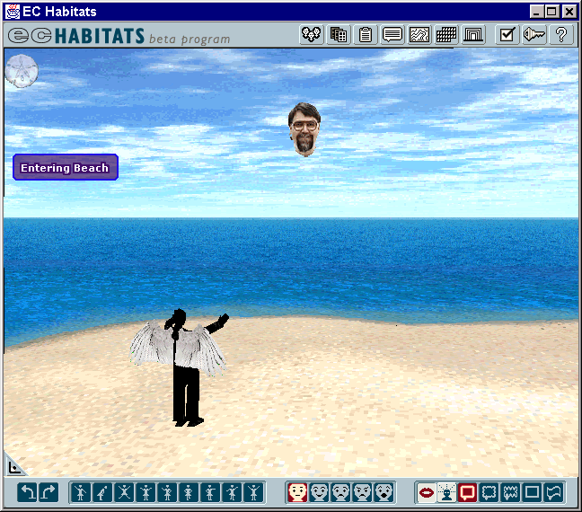
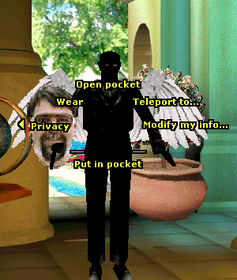
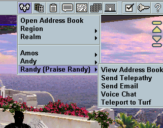
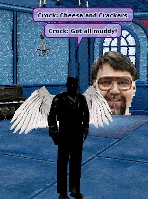

Last updated: [98/6/12 Crock]
[98/5/26 claire] added comments
[98/5/27 Bill] added comments
[98/6/12 crock] responds to claire and bill and adds some new
material
This document comments on the current state of the User Interface in Cosm, to inform the soon-to-commence revisions that must be made for NeoCosm. Many of the recommendations made here should be embraced as as-good-as-God's-own-Truth. Many of the other recommendations made here should not be touched with a ten-metre-pole. I can't tell the difference. Can you?
The feedback from the Alpha Testers has generally been vary favorable, with the exception of two specific complaints:
This is the current state of the main window:

The UI Spec. I have been using the 3.31.98 edition, which pretty closely describes the Alpha system. Claire reports that earlier editions will be much more useful when reconsidering the NeoCosm UI design. Does anyone have a copy? This should be part of the document base.
The Habitat Help Pages.
The size of the main window was fixed to deal with a couple of constraints:
The interaction of those constraints inspired the current main window dimensions. Unfortunately, the main window is too tall to fit in 480: The bottom button row is lost. Those buttons are not completely essential, all having keyboard equivalents.
A number of things have changed since that decision was made:
Recommendation: Make the size of the main window changeable by the customer. The minimum size will work on 640 displays. Allow widening the aspect ratio in regions. Excess vertical space will be used for dialog balloons.
[98/05/26 claire] Will this include making the window smaller? This involves different ui issues and we should be clear on what it means to make the window smaller.
[98/05/27 Bill] Large windows will have significant performance implications. However, at least it is up to the user.
Currently, Cosm makes extensive use of dialogs. The pattern of use for many of the dialogs is
This is what menus are for. Menus fulfill this pattern with less cursor movement and less clicking. Menus also avoid operation errors caused by the customer forgetting to bring the main window to front before chatting.
Better use of menus would avoid the large number of windows that Cosm leaves lying around.
Recommendation: Use menus where appropriate. Many of the buttons which produce windows should produce menus instead.
[98/05/26 claire] Windows such as the teleport window support several list. The original design also allowed searching, sorting and filtering on any field. Are we going to do away with this ability? We need to beware of long unwieldy menus which result form "all the foozits" type lists. A suggestion is keep the dialog but support a menu where the choices are some reasonable number of items or restrict the list to recent or favorites. We should also consider the use of command shortcuts.
[98/05/27 Bill] One of the most annoying "features" of the current interface is that the keyboard focus "randomly" changes as you bring up the ancillary windows. One example is when you select "add to address book" on an avatar and then continue to type chat. Sometime, part way through what you are typing, the focus changes and your typing is silently dropped. One solution would be to say that typing at the main window cancels the automatic focus change.
There is a tension between wanting to look like other applications (so that people can apply the UI knowledge that they have already acquired) and wanting to look different (superior to all those other tedious applications). This tension was intensified by AWT/IFC, which made any kind of UI difficult and tedious.
Recently, Sun has released Swing and a UI scheme called Metal. Metal moderates the 3D popping out look with flush surfaces. I think that it is attractive, efficient, and functional.
Recommendation:
Adopt as much of Swing/Metal as makes sense.
[98/05/26 claire] I don't believe we should be in the business of adopting any look and feel in a "branded micro-network". We should support customizability not a customized look. JFC/Swing allows this kind of support. As we understand the cost of customization of Swing widgets we can make it clear to customers what the cost of this will be for choosing their own look. The customer is always right.
The watermark provides some important functions:
The watermark has these problems:
Recommendation: Remove the watermark from the Cosm pane. Instead, create 3 new buttons on the command bar. The buttons will be labeled with bitmaps which can carry logos or themes.
[98/05/26 claire] I agree with everything except the create three buttons part. First, there is problem with truncating long names to fit some fixed button size or picking mnemonics. Second, the idea that there is one and only one policy in force for a given region is just plain wrong, what about an adult region which doesn't allow uncertified art? I'd prefer we have a TOS icon that is distinctive when some TOS policy is in force.
[98/05/27 Bill] Do we want to have the TOS always visible to shoulder surfers?
The Adults Only tag above is clearly wrong. TOS should be framed as permissions, not as restrictions. And it looks like text, when it should look like graphics.
The Customize command on the Program menu allows for changing the gesture and expression buttons.
[98/05/26 claire] The original design of those bars was a title bar which allowed you to select from all available gestures or expressions and select the ones which would be readily available. I think we should revisit the earlier triaged design. Keeping the point of control close to thing that is being controlled is a much better design.

Pie Menus appeared in the original Habitat as a way of loading four commands (Get, Put, Go, and Do) onto an Atari joystick. A much more sophisticated pie menu is used in Cosm. Should it continue into NeoCosm? Fortunately, we have real customer experience from the Alpha test to inform the next set of choices. Customers report that their first impression is confusion.
Pie menus are new. Any innovation must provide a higher level of performance, otherwise it increases the cost of learning without increasing value. In my opinion, pie menus in the Cosm application do not provide enough value. They do not work enough better than linear menus. In particular, the diagonal commands are hard to reach (Wear,Swatch). The 12-command menus are probably too difficult to use.
Click and Flick is a gestural variation of pie menus which allows common commands to be issued with just a flick. Unfortunately in the Cosm application, flicks alias with clicks and so unintended commands can be issued. Cosm lacks an Undo command, so there is no simple remedy. Click and Flick may be well suited to pen applications, but not to Cosm.
Our implementation of Pie Menus is incompatible with dragging. Dragging can be useful. We can't do it.
There should be keyboard shortcuts for the pie commands. There are 8 commands around the pie, so the shortcuts could be Alt+1 thru Alt+8. But that means you click on the object to identify it, then put down the mouse and press Alt+1. That isn't much of a shortcut. This requires some study.
[98/05/26 claire] I prefer pie menus partly because they center the eye on the object you're working on. I also think linear menus have many of the same problems. They differ only in that the conventions for solving the problems are worked out. If you remove the click-n-flick capability you CAN drag things. Pie submenus need to be fixed. There are several working formats for submenus. I would definitely prefer we wait for user feedback on this one.
The Command Buttons currently open dialog boxes. In some cases, they would be more effective if they brought up menus. The advantages of using menus instead of dialogs are speed and the focus stays in the main window.

Clicking the People button pops up a menu containing:
Each name has a submenu containing
This brings up a submenu of all of the avatars in the region. This replaces the Who's In Here command.
This brings up a submenu of all of the avatars in the realm; also showing the region each avatar is in. This replaces the Where Is Everyone command.
[98/05/26 claire] This is exactly the kind of list, which seems fine while testing with 10 people but would be ridiculous with 50 or a 100. I don't believe we will consider this product much of a success if we never have 100 people in a realm at once. Furthermore, there is no way to do a sort or search on the list. You just have to scroll until you come to the name you want.
Claire is correct. The Realm submenu would be a big mistake.
(This discussion does not include study of the Buddy Lists developed at The Palace and at OnLive. We should look at those Buddy Lists.)
The Address Book should have 4 divisions:
The current Address Book combines My Directory and Detail, making the Directory the first page of the Detail, which does not work well.I recommend
[98/05/26 claire] This is another window that was triaged into its current state. I'd like to start with the original designs and work from there.
The Catalog Catalog window is unnecessary. Instead, bring up a pop-up menu containing the names of the separate catalogs.
If we ever need commands to create or acquire catalogs, they should also go on this menu.
Problems with the Turfs Catalog:
The Inventory window is the worst window in Cosm. The problems are:
[98/05/26 claire] I believe this window was heavily triaged. A review of the original design document is needed here.
The Map & Event buttons may not be needed if we have a Realm button.
Clicking on the Teleport button pops up a menu containing
This indicates if a teleportation is currently in progress, or if teleportation is now possible. (Is it possible to have this cancel a teleportation in progress? Today, it would be used to escape from containership errors. Someday, it could be used to escape from slower obnoxious servers.)
Realm is a submenu of destinations provided by this Realm.
Recent is a submenu of recently visited regions, most recent at the top, no duplicates.
Adds this Region to the Favorites list.
Dialog allows removing regions from the Favorites list, or adding regions from the Realm or Recent to the Favorites list.
Also, provide for creating a portal to any place on the Favorites, Realm, or Recent list.
A Pocket Button should be added. It replaces the Open Pocket command on the Avatar menu.
Clicking Pocket pops-up a menu of the contents of the pocket. Click on an object to move it to the Avatar's hand. If the Avatar's hand is already full, the object the Avatar was already holding is moved to the pocket.
[98/05/26 claire] The problem I have with pocket is that is much more like the typical inventory window used in games than it is a pocket. The problem with a simple text menu:
The pocket would work better if it were treated as the quick access list. This is often used in games to shortcut your inventory. Your pocket would have a finite number of slots. Any item you picked up could end up in your pocket as long as you had room. You can then use a command to add an item into your pocket or move an item out of your pocket back into main inventory. Alternately, the pocket is simple the most recent items you've added to your inventory. The menu becomes much more manageable. Your larger inventory window allows you to deal with the object directly. I don't know about the current inventory window that is trying to be something else again.

The vertical padding around the text in balloon should be cut in half. This will give us a tighter look. The horizontal padding is ok.
Combine balloons from the same speaker with the same style together into a single balloon. This will improve the visual flow of long speeches, making the restriction on entry balloon-length more tolerable. Balloons will not be combined if the resulting balloon would be too large.
[98/05/26 claire] currently the main restriction for balloon entry length is that the speech would be too large. In our current font, you always reach the maximum balloon size before you reach the maximum character count. If what you mean is two sequential utterances, which are in the same style by the same person, should be treated as a single utterance, than I disagree.
No, the current restriction on balloon length is to reduce chat latency. Since the balloon isn't transmitted until it is complete, long speeches will be preceded by a very long delay. Limiting entry means speeches must be broken into shorter bursts, which reduces latency, but is a drag.
My proposal is to keep the limitation on entry, but to reassemble the subspeeches into a longer ones.
Quips should be removed when the speaking avatar moves.
If time passes without any balloon activity, then scroll the balloons up. Eventually, the screen will clear.
[98/05/26 claire] This feature was triaged out
The region designer should be able to specify for each camera the rectangle that will contain all of the balloons, including a null rectangle to turn off balloons completely (requiring use of Log for chat). The left and right limits will be useful in game regions. The top and bottom limits can be used to move the balloons to the bottom of the screen, like movie subtitles.
Alpha Testers have complained that they want to be able to use the emote balloons without having their names inserted. Some even thought that the name insertion was a bug.
Proposal: Allow backspace to remove the avatar name from emote balloons, similar to the way backspace and remove an address from an ESP balloon.
All portals and Portaportals should provide an Add to Favorites command.